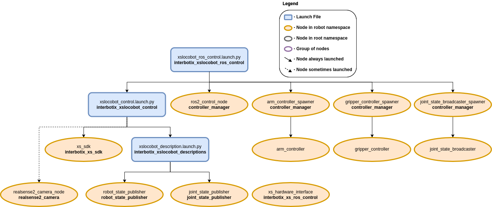

ROS 2 Controllers Configuration
 View Package on GitHub
View Package on GitHub
Overview
This package provides the necessary ROS controllers needed to get MoveIt to control any physical arm on an X-Series LoCoBot. It essentially takes in Joint Trajectory commands from MoveIt (via the FollowJointTrajectoryAction interface) and then publishes joint commands at the right time to the xs_sdk node. Currently, only the 'position' values in the Joint Trajectory messages are used since that provides the smoothest motion. Note that while this package is really only meant to be used with MoveIt, it could technically be used with any other node that can interface properly with the joint_trajectory_controller package.
Structure
This package builds on top of the interbotix_xslocobot_control package (which starts the xs_sdk node), and is typically used in conjunction with the interbotix_xslocobot_moveit package. To get familiar with the nodes in those packages, feel free to look at their READMEs. The other nodes are described below:
- controller_manager - responsible for loading and starting a set of controllers at once, as well as automatically stopping and unloading those same controllers
- xs_hardware_interface - receives joint commands from the ROS controllers and publishes them to the correct topics (subscribed to by the xs_sdk node) at the appropriate times
Usage
This package is not meant to be used by itself but included in a launch file within your custom ROS package (which should expose a FollowJointTrajectoryAction interface). To run this package, enter the command below in a terminal (assuming a LoCoBot with a PincherX-100 is being launched).
$ ros2 launch interbotix_xslocobot_ros_control xslocobot_ros_control.launch.py robot_model:=locobot_px100
This is the bare minimum needed to get up and running. Take a look at the table below to see how to further customize with other launch file arguments.
| Argument | Description | Default | Choices |
|---|---|---|---|
| robot_model | model type of the Interbotix LoCoBot such as locobot_base or locobot_wx250s. |
locobot_base, locobot_px100, locobot_wx200, locobot_wx250s |
|
| robot_name | name of the robot (could be anything but defaults to locobot). |
locobot |
|
| arm_model | the Interbotix Arm model on the LoCoBot; this should never be set manually but rather left to its default value. | PythonExpr('"mobile_" + "' + LaunchConfig(robot_model) + '".split("_")[1]') |
|
| use_camera | if true, the RealSense camera nodes are launched. |
false |
true, false |
| use_rviz | launches RViz if set to true. |
false |
|
| mode_configs | the file path to the 'mode config' YAML file. | LocalVar('FindPackageShare(pkg= interbotix_xslocobot_ros_control) + 'config' + 'modes_all.yaml'') |
|
| xs_driver_logging_level | set the logging level of the X-Series Driver. | INFO |
DEBUG, INFO, WARN, ERROR, FATAL |
| use_sim_time | tells ROS nodes asking for time to get the Gazebo-published simulation time, published over the ROS topic /clock; this value is automatically set to true if using Gazebo hardware. |
false |
true, false |
| base_type | the base type of the LoCoBot. | EnvVar(INTERBOTIX_XSLOCOBOT_BASE_TYPE) |
kobuki, create3 |
| use_gripper | if true, the default gripper is included in the robot_description; if false, it is left out; set to false if not using the default gripper. |
true |
true, false |
| show_ar_tag | if true, the AR tag mount is included in the robot_description; if false, it is left out; set to true if using the AR tag mount in your project. |
true |
true, false |
| show_gripper_bar | if true, the gripper_bar link is included in the robot_description; if false, the gripper_bar and finger links are not loaded. Set to false if you have a custom gripper attachment. |
true |
true, false |
| show_gripper_fingers | if true, the gripper fingers are included in the robot_description; if false, the gripper finger links are not loaded. Set to false if you have custom gripper fingers. |
true |
true, false |
| external_urdf_loc | the file path to the custom urdf.xacro file that you would like to include in the Interbotix robot's urdf.xacro file. | '' | |
| hardware_type | configures the robot_description to use the actual hardware, fake hardware, or hardware simulated in Gazebo. |
actual |
actual, fake, gz_classic |
| robot_description | URDF of the robot; this is typically generated by the xacro command. | Command(FindExec(xacro) + ' ' + LocalVar('FindPackageShare(pkg= interbotix_xslocobot_descriptions) + 'urdf' + 'locobot.urdf.xacro'') + ' ' + 'arm_model:=' + LaunchConfig(arm_model) + ' ' + 'robot_name:=' + LaunchConfig(robot_name) + ' ' + 'base_model:=' + LaunchConfig(base_type) + ' ' + 'robot_model:=' + LaunchConfig(robot_model) + ' ' + 'use_gripper:=' + LaunchConfig(use_gripper) + ' ' + 'show_ar_tag:=' + LaunchConfig(show_ar_tag) + ' ' + 'show_gripper_bar:=' + LaunchConfig(show_gripper_bar) + ' ' + 'show_gripper_fingers:=' + LaunchConfig(show_gripper_fingers) + ' ' + 'use_lidar:=' + LaunchConfig(use_lidar) + ' ' + 'external_urdf_loc:=' + LaunchConfig(external_urdf_loc) + ' ' + 'hardware_type:=' + LaunchConfig(hardware_type) + ' ') |